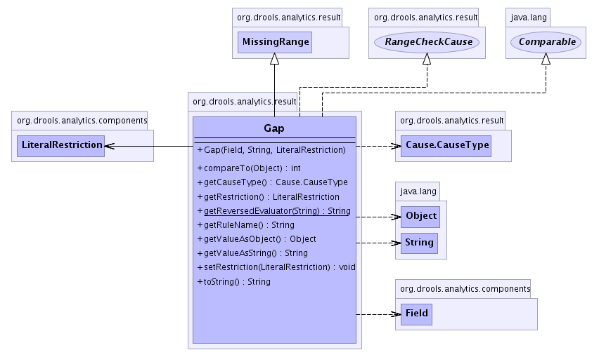

org.drools.analytics.result
Class Gap
java.lang.Object
 org.drools.analytics.result.MissingRange
org.drools.analytics.result.Gap
org.drools.analytics.result.MissingRange
org.drools.analytics.result.Gap
- All Implemented Interfaces:
- java.lang.Comparable, Cause, RangeCheckCause
public class Gap
- extends MissingRange
- implements RangeCheckCause, java.lang.Comparable
-
- 
| Nested classes/interfaces inherited from interface org.drools.analytics.result.Cause |
Cause.CauseType |
| Methods inherited from class java.lang.Object |
clone, equals, finalize, getClass, hashCode, notify, notifyAll, wait, wait, wait |
| Methods inherited from interface org.drools.analytics.result.Cause |
getId |
Gap
public Gap(Field field,
java.lang.String evaluator,
LiteralRestriction restriction)
- Parameters:
field - Field from where the value is missing.evaluator - Evaluator for the missing value.cause - The restriction that the gap begins from.
getReversedEvaluator
public static java.lang.String getReversedEvaluator(java.lang.String e)
- Takes the given evaluator e, and returns a reversed version of it.
- Returns:
- evaluator
compareTo
public int compareTo(java.lang.Object another)
- Specified by:
compareTo in interface java.lang.Comparable- Overrides:
compareTo in class MissingRange
getCauseType
public Cause.CauseType getCauseType()
- Specified by:
getCauseType in interface Cause
getRuleName
public java.lang.String getRuleName()
- Specified by:
getRuleName in interface Cause
getRestriction
public LiteralRestriction getRestriction()
setRestriction
public void setRestriction(LiteralRestriction restriction)
getValueAsString
public java.lang.String getValueAsString()
- Specified by:
getValueAsString in interface RangeCheckCause
getValueAsObject
public java.lang.Object getValueAsObject()
- Specified by:
getValueAsObject in interface RangeCheckCause
toString
public java.lang.String toString()
- Overrides:
toString in class java.lang.Object